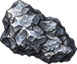
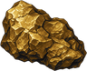
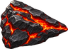
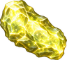

Mining
Equip a pick and work an ore rock. Each kind of rock needs a level; better picks mine faster.
Level guide
| Level | Unlock | |
|---|---|---|
| 1 | Mine an iron vein for Chunk of Iron | |
| 15 | Mine a silver vein for Chunk of Silver | |
| 20 | Gather with the Steel Pickaxe (15% faster) | |
| 20 | Sometimes find a gem in any ore rock (about 1 in 60) | |
| 25 |  | Mine a steel vein for Chunk of Steel |
| 35 | Gather with the Gold Pickaxe (30% faster) | |
| 35 |  | Mine a gold vein for Chunk of Gold |
| 45 | Mine a frost vein for Chunk of Ice | |
| 50 | Mine a gem rock for uncut gems | |
| 55 | Gather with the Titanium Pickaxe (45% faster) | |
| 55 |  | Mine an ember vein for Chunk of Fire |
| 65 | Mine a titanium vein for Chunk of Titanium | |
| 75 | Gather with the Star Pickaxe (60% faster) | |
| 80 |  | Mine a starstone for Chunk of Star |